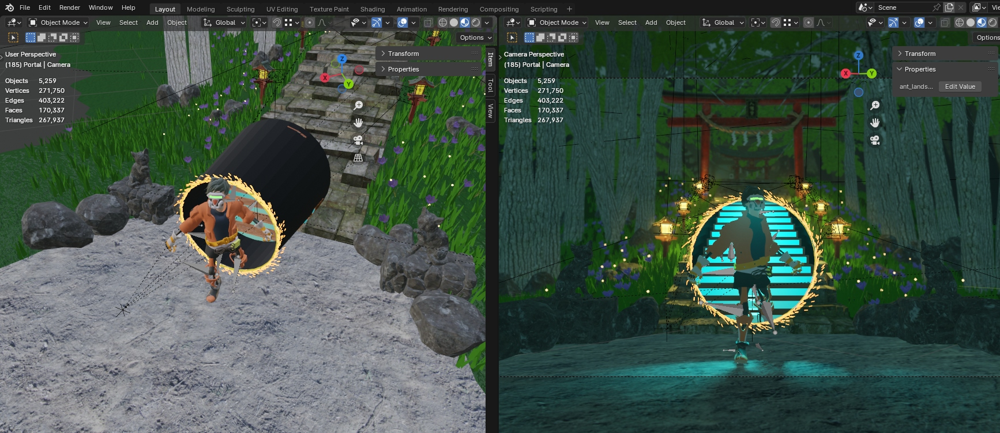
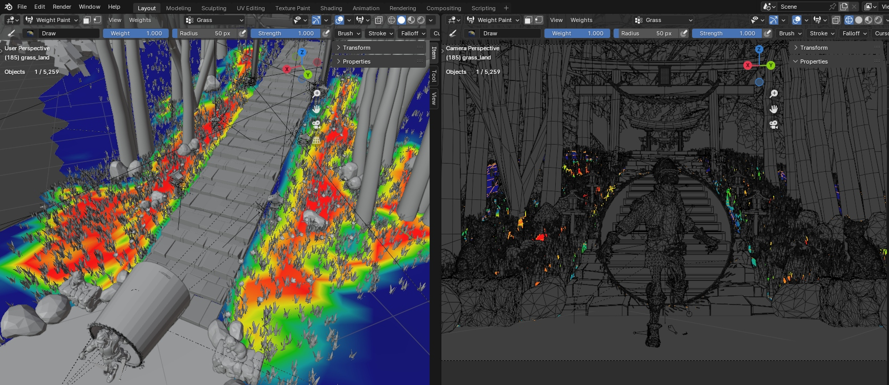

Concept
For my submission, I decided to make a non-photorealistic scene that is closer to an animation movie-like scene. The idea is to create a single "portal" that can connect the past and the future. After the topic "Journey to the Unknown" was announced, I had a brilliant concept to make two distinct worlds and illustrate them appropriately by highlighting the sci-fi character in a traditional-like world and also unique variations of the same thing in two different locations (the sci-fi ladder and the stone ladder, in my case). It seamlessly transitions between the two worlds with a little adjustment to perspective.
Additionally, I added some fog effects to give it a more "mysterious" feel and make it closely fit the topic. One of my scene's distinctive features is the use of particle systems (for the portal and fireflies), which contribute to the image's soothing and peaceful vibe. All of the 3D models (except for the character, which is from another personal project of my teammate) are freely available from a variety of websites and are listed on the Resource page.
Scene Building
In building this scene, my reference is to use a “thin” portal to save some spatial space and be able to properly show the environment. The idea is to use the “Dr. Strange-like” portal, which saves quite a lot of space and works well to highlight the transition. For the object placements and composition, I used a reference from a blender rendering challenge on YouTube by Nathanael Zahn.
With these two references, I started building up the entire scene in Blender by looking into freely available and downloadable 3D models and modifying them to match the scene. Most of them have already integrated with their own materials, so the real challenge is to match the material composition (i.e., re-adjust the BSDF, re-map the UV, re-adjust the color, and place it in the best position). Some of the objects are highly detailed, so I also reduced the vertex quality using blender modifier tools.
As seen from this second image, upon optimizing the objects, I managed to render only 170k faces, which is a lot less than most of the previous year’s submissions. My scene consists of mostly low-poly objects (some dark areas because of viewing many small objects in the tight area). This also reduced the processing time of my image (if using a simple pathtracing integrator). In addition, to properly spawn some small details (grass, flowers, and fireflies), I use weight paint to only spawn the objects in the area that is being looked at from the camera, ignoring some areas that occlude as many as possible, including the stairs. (It would be weird if some grass and flowers appeared from the stairs.)
To make the scene more cartoon-like, our team developed a line-tracer (one of our developed features) to set some thin lines on the surface of each object in the scene, allowing the scene to be more like an animated-style movie. This feature will be further described in the Feature section.